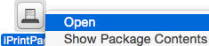

iPrintPage is an HTML to plain text converter that supports printing in text mode. It's especially useful for printing on continuous paper of Impact Printers (ideal for printing receipts, invoices, reports and spread sheets in many copies simultaneously). Conversion of HTML to plain text, preserves the formatting as much as possible (it achieves this by using the third party w3m text browser). Application allows easy printing from Safari or Firefox browsers. Currently any OS X app (i.e. Safari, Firefox, etc.) supports printing in graphics mode only. iPrintPage can print both in text and graphics mode.
Advantages of text over graphics mode printing on Dot Matrix Printers:
- Faster printing. Text mode printing unleashes your printer's potential (i.e. Epson FX 890 has the following print speed options (at 10 cpi): NLQ (104 cps), Draft (419 cps), High Speed Draft (559 cps), Ultra Speed Draft (566 cps)).
- Always legible printing using some of the built-in printer fonts. You can select a typeface and font size (pitch) on printer's control panel.
- Gapless printing on continuous paper.
- Printing will stop immediately at the end of the text. Optionally, iPrintPage can feed the paper forward to the tear-off position.
- It reduces paper waste dramatically.
Current disadvantages of printing in text mode:
- The whole text is printed with a built-in printer's font. This means that the original font properties are not preserved.
- HTML to text conversion excludes images. If you want to preserve images or exact formatting, print in Graphics mode.
- HTML to text conversion has a limited CSS support.
Download
- iPrintPage v1.2
- MD5 checksum: F68B286DC368F248098DCBBFA379E80D
- If you can't open the app at first launch, then control click on the app icon and select "Open". 
System Requirements
- Mac OS X v10.5 (Leopard) - 10.12 (Sierra); Intel Mac
Release Notes
- 11/16/2016 - v1.2 - Signed application and dmg installation file.
- 08/09/2015 - v1.1 - Fixed a bug when "Open With -> iPrintPage" command is used in the Finder.
- 07/12/2015 - v1.0 - Initial release
License
- Donationware
Contact

How to use iPrintPage?
- You can navigate Safari to an HTML report that you want to print. Start iPrintPage (if it's already started, use the "Get (Cmd+R)" function). Safari's topmost page will appear in iPrintPage ready for printing (or file saving).
- In Firefox, you can install the ViewSourceWith add-on. This add-on allows you to open current Firefox page directly in iPrintPage.
- Alternatively, in Safari or Firefox, you can navigate to an HTML report. Then copy some snippet or the whole web page (Cmd+A, Cmd+C). In iPrintPage use the "Paste (Cmd+V)" function.
- You may edit the text or insert another snippet using Cmd+L Paste command. To select a vertical block of text (such as a column), hold the Option key then select the text.
- Choose document and printer encodings as well as Characters Per Line (cpl) and End Lines options. iPrintPage will save these options for the next usage.
- Finally, select a printer and use the "Print (Cmd+P)" function. You can turn off "Text mode" option if you want to print on Non-Dot Matrix Printers or export to PDF.
- If you find iPrintPage useful, please contribute by sending an Amazon gift card (in any amount) to the contact email.
Here is detailed explanation of all functions:
- Print (Cmd+P) - use this function to start printing. In Text mode printing will start immediately, without additional dialogs.
- Text mode - If on, print job is send to selected printer as plain text. This is useful for printing on continuous paper on Dot Matrix Printers.
If off, printer will print in Graphics mode that works on all printers, but without the advantages that text mode provides. Also, in Graphics mode you can export to PDF. - Characters Per Line (cpl) - number of characters that your printer can output per line. This value depends on printer's model (i.e. 80 or 136 columns) and printer's PITCH option (usually 10 cpi). For example, the 12 cpi option on printer's control panel will set a smaller font size and you can output 96 characters per line instead of the default 80:
80 col.
Printer136 col.
PrinteriPrintPage (cpl) Printer (cpi) 80 10 96 12 120 15 137 17 160 20 iPrintPage (cpl) Printer (cpi) 136 10 163 12 204 15 233 17 272 20 - End Lines - If you want to feed the paper forward to tear-off position, enter the number of blank lines (i.e. 14) that will be added at the end or 0 if you don't want to feed the paper forward.
- Printer encoding - Select printer's encoding. If you print Non-ASCII characters (i.e. Cyrillic CP1251), you need to set that encoding in your printer as well. Search printer's manual for a "Character table" option in "Changing the Printer's Default Settings" chapter.
- Document encoding - Select document's encoding. This is the encoding of the original HTML page (i.e. UTF-8).
- Paste (Cmd+V) - You may copy some part of a web page in your browser (i.e. Firefox, Safari) and then use this function to convert the snippet to plain text. Operation replaces any existing text in the view. If you want to paste without replacing then use Cmd+L.
- Get (Cmd+R) - Safari's topmost web page will appear converted in plain text with preserved formatting. Operation replaces any existing text in the view.